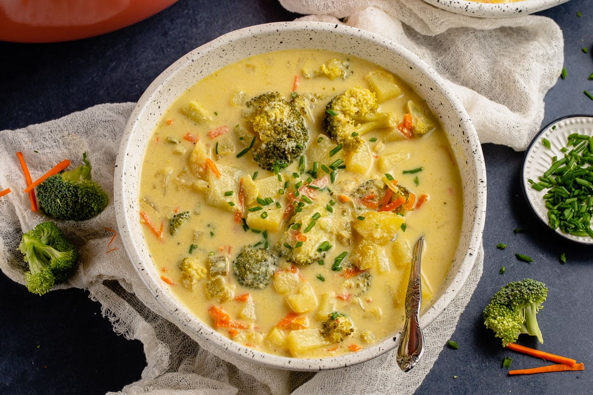

Vegan Broccoli Potato Soup

Description
This vegan broccoli potato soup is a hearty spin on our Copycat Panera Bread Broccoli Cheddar Soup. This version is nut-free and naturally lower in fat, but still just as creamy and delicious. If you enjoy creamy, cheesy soups, you’re guaranteed to love this one.
Ingredients
- Silken tofu
- Non-dairy milk
- Nutritional yeast
- Oil
- Onion and garlic
- Vegetables
- Broth
- Lemon juice
Steps
- Make the creamy base. Add the silken tofu, nutritional yeast, and non-dairy milk to a high-speed blender. Blend until smooth and set aside.
- Sauté the aromatics. In a large pot, heat the olive oil over medium heat. Add the onion, celery, and ½ teaspoon salt and sauté for about 4 minutes. Add in the garlic and cook for another 2 minutes.
- Add the remaining ingredients, except lemon juice. Add the vegetable broth to the pot along with the blended silken tofu cream, broccoli, potatoes, carrot, nutmeg, black pepper, and salt. Stir to combine.
- Bring to a boil. Once boiling, lower the heat to a simmer and cook until the potatoes are fork-tender and the soup has thickened. Remove the vegan broccoli soup from the heat.
- Season to taste. Remove the vegan broccoli soup from the heat and stir in the lemon juice and salt and black pepper to taste.
- Serve warm. Garnish with fresh chives and enjoy!